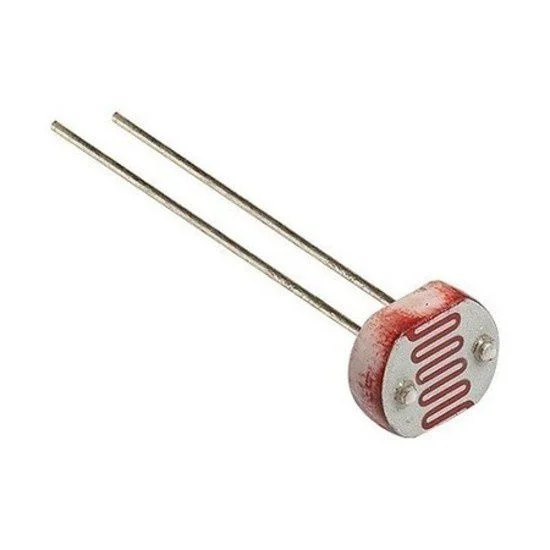

LDR (Light Dependent Resistor)
Definição: O LDR (Light Dependent Resistor) é um tipo de resistor cuja resistência elétrica varia
em função da intensidade da luz que incide sobre ele. Em ambientes iluminados, a resistência do LDR diminui,
permitindo a passagem de mais corrente elétrica. Em condições de pouca luz, a resistência aumenta, reduzindo a
corrente. Esse comportamento faz do LDR um dispositivo útil para medir níveis de iluminação.
Como o LDR pode ser usado como sensor de luz?
O LDR pode ser utilizado como um sensor de luz em circuitos simples. Quando a luz incide sobre o LDR, ele altera
sua resistência. Essa mudança pode ser detectada por um microcontrolador ou outro circuito eletrônico, que pode
então ativar ou desativar dispositivos, como lâmpadas ou alarmes. Por exemplo, em um sistema de iluminação
automática, o LDR pode acionar uma lâmpada quando a luz do dia diminui.
Imagem:
Principais aplicações e usos do LDR no controle de iluminação
- Luminárias Automáticas: Acionamento automático de luzes em ambientes externos, como jardins
ou calçadas, que se acendem ao anoitecer. - Sensores de Luz em Câmeras: Ajustam a exposição da câmera com base na iluminação ambiente.
- Alarmes de Segurança: Dispositivos que detectam mudanças na luz, como a abertura de uma
porta. - Sistemas de Irrigação: Controlam a ativação de sistemas de irrigação com base na luz solar,
garantindo eficiência energética. - Dispositivos Eletrônicos: Usados em brinquedos e dispositivos que reagem à luz, alterando o
comportamento conforme a iluminação.